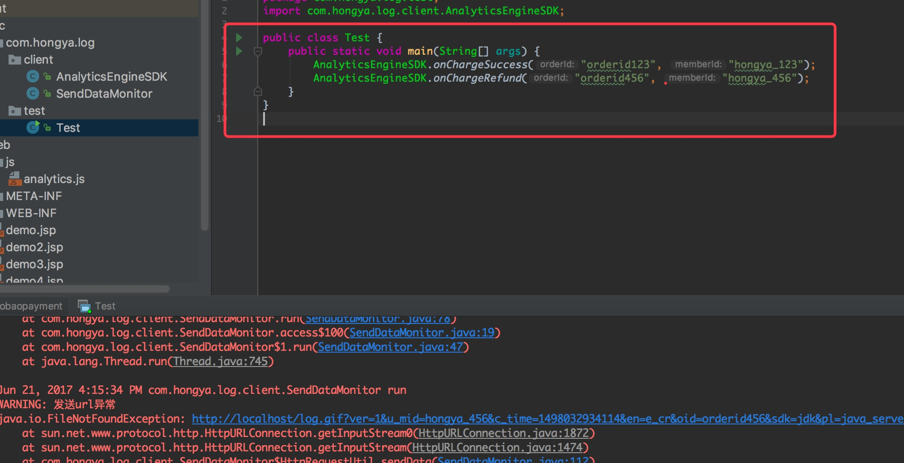

项目简介：大数据涉及到的业务很多很复杂，从一开始的项目架构，再到后台的网站搭建，以及数据的收集，数据的分析，数据的迁移，业务开发，后台运维，等等。我们没办法一个实验将所有的过程都学习到。本次试验我们将会将重点放在项目架构上，后面的项目我们将重点放在每一部分的实现上。通过本次实验，你将能了解到一个大数据架构师工作的基本步骤，虽然本次实验我们也有复杂的代码分析过程，但是大家没有必要将自己的重点放在代码上面，大家应该更加站在架构师的角度，专注于整个项目每一部分的连接，每个部分具体实现的细节，大家可以不必太深入，我们后期会有专门的实验放在这上面。 有关代码我们已经实现并且提供，大家直接打开，然后阅读熟悉每部分的意义即可。 本次项目我们是架构一个日志分析，我们的要完成的任务包括后台和前端的实现，网站的搭建，nginx反向代理的搭建，etl数据清洗程序，数据分析，数据报表的实现。
一、业务分析和需求文档
1.业务分析概述
本次试验我们主要是分析类似淘宝等购物网站上的点击流，从而进行展示分析。在本次项目中我们分别从七个大的角度来进行分析，分别为：
用户基本信息分析模块、浏览器信息分析模块、地域信息分析模块、用户浏览深度分析模块、外链数据分析模块、订单分析模块以及事件分析模块。
注意几个概念:
用户/访客：表示同一个浏览器代表的用户。唯一标示用户
会员：表示网站的一个正常的会员用户。
会话：一段时间内的连续操作，就是一个会话中的所有操作。
Pv：访问页面的数量
在本次项目中，所有的计数都是去重过的。比如：活跃用户/访客，计算uuid的去重后的个数。
我们分析数据的需求文档和最终的展示结果大概如下。
2.用户基本信息分析模块
用户基本信息分析模块主要是从用户/访客和会员两个主要角度分析浏览相关信息，包括但不限于新增用户，活跃用户，总用户，新增会员，活跃会员，总会员以及会话分析等。下面就各个不同的用户信息角度来进行分析：
(1).用户分析
该分析主要分析新增用户、活跃用户以及总用户的相关信息。 新访客:老访客(活跃访客中) = 1:7~10
(2).会员分析
该分析主要分析新增会员、活跃会员以及总会员的相关信息。
(3).会话分析
该分析主要分析会话个数、会话长度和平均会话长度相关的信息。

(4).Hourly分析
该分析主要分析每天每小时的用户、会话个数以及会话长度的相关信息。
3.其他模块分析
在用户模块的基础上，我们可以添加其他的六个模块分析，我们本次试验先不展示所有的模块，只是作简单介绍，例如地域分布模块：
上面分析的业务需求大家可能不太懂，没关系，注意在下面的项目中，时不时回头看看我们的需求，就能明白了。
二、开发环境搭建
为了方便管理，我们以后按照管理，尽量使用maven构建java和scala项目。另外我们的软件安装在D盘的soft目录下，我们的开发项目放在D盘的workspace目录下。
1.下载安装软件
分别在http://tomcat.apache.org和http://maven.apache.org下载tomcat和maven，解压后放在D盘的soft目录，然后配置环境变量，需要配置的环境变量包括 MAVEN_HOME和TOMCAT_HOME，并且将他们的bin目录添加到PATH中。安装配置完成后，在命令行输入start-up和mvn命令，检查是否安装正确。
确保无误后，我们的开发环境使用IDEA，安装好IDEA，打开，配置maven的目录，如下图的方法，搜索maven，在Maven的配置填写maven的路径。
2.搭建服务器
(1).布置开发环境
如果大家熟悉javaEE开发，这一段就比较简单。我们搭建服务器就是新建一个javaEE项目，然后启动，这个过程需要借助tomcat实现。首先打开IDEA，IDEA中已经配置好了maven的路径。
点击File ->New -> Project ，选择java的web application，然后下一步:

在下一步我们设置项目路径，我们的项目名为taobaopayment，放在D盘下的workspace目录下。然后点击完成。这时候就新建了一个web项目，我们在项目的web文件下能看到一个index.jsp文件，这个文件你可以修改为自定义的内容，例如我修改为：
<%@ page contentType="text/html;charset=UTF-8" language="java" %>
<html>
<head>
<title>taobaopayment</title>
</head>
<body>
支付页面
</body>
</html>
(2).本地发布项目
菜单栏选择Run ->Edit Configuration或者点击右上角按钮添加tomcat的发布参数，依次点击 加号 ->tomcat server -> local ，添加tomcat：
在右边的配置页面配置好名字、地址、端口：
然后在deployment选项下面点击加号添加发布选项，然后设置你content名字，我们设置为 taobaopayment：
点击确定后，我们可以看到右上方和下方都出现了可以启动的三角形按钮，点击启动：
启动成功后打开浏览器，输入http://localhost:8080/taobaopayment/，出现我们刚刚编辑的jsp页面，剩下的操作自己实验。
三、Web服务器开发
根据我们的需求文档，我们需要实现支付成功和退款页面。这里又分为两部分，一是前端的页面传来的请求数据，这部分代码使用JavaScript编写，另一方面是后台的服务器发送过来的代码，通过Java语言编写。
1.后端开发
(1).程序后台事件分析
本项目中在程序后台会有chargeSuccess事件，本事件的主要作用是发送订单成功的信息给nginx服务器。发送格式同pc端发送方式， 也是访问同一个url来进行数据的传输。格式为:
http://hongyahuayu.com/index.jpg?query1=spark
当会员最终支付成功的时候触发chargeSuccess该事件，该事件需要程序主动调用，然后向后台发送数据：
u_mid=maomao&c_time=1449142044528&oid=orderid_1&ver=1&en=e_cs&pl=jdk&sdk=java，其中 u_mid和oid代表用户id和订单id。
前面我们分析了后端的业务，如果你不太懂，我们尅简单地说，后端程序的工作流如下：
简单说，后端就是要设计方法，当chargeSuccess触发的时候，我们给后台发送数据。
(2).后端程序开发
程序开发有一定难度，另外由于我们本次试验的重点是后面的数据分析，这一块不作太高的要求，大家能够理解即可，核心代码如下，其余代码可以在项目中查看：
public static boolean onChargeSuccess(String orderId, String memberId) {
try {
if (isEmpty(orderId) || isEmpty(memberId)) {
// 订单id或者memberid为空
log.log(Level.WARNING, "订单id和会员id不能为空");
return false;
}
// 代码执行到这儿，表示订单id和会员id都不为空。
Map<String, String> data = new HashMap<String, String>();
data.put("u_mid", memberId);
data.put("oid", orderId);
data.put("c_time", String.valueOf(System.currentTimeMillis()));
data.put("ver", version);
data.put("en", "e_cs");
data.put("pl", platformName);
data.put("sdk", sdkName);
// 创建url
String url = buildUrl(data);
// 发送url&将url加入到队列
SendDataMonitor.addSendUrl(url);
return true;
} catch (Throwable e) {
log.log(Level.WARNING, "发送数据异常", e);
}
return false;
}
注意事项 修改代码这里url地址为自己服务器的地址：
2.前端开发
(1).前端事件分析
前面我们说后端的事件主要是chargeSuccess，前端的时间处理就更复杂了。针对我们最终的不同分析模块，我们需要不同的数据，接下来分别从各个模块分析，每个模块需要的数据。 1. 用户基本信息就是用户的浏览行为信息分析，也就是我们只需要pageview事件就可以了； 2. 浏览器信息分析以及地域信息分析其实就是在用户基本信息分析的基础上添加浏览器和地域这个维度信息，其中浏览器信息我们可以通过浏览器的window.navigator.userAgent来进行分析，地域信息可以通过nginx服务器来收集用户的ip地址来进行分析，也就是说pageview事件也可以满足这两个模块的分析。 3. 外链数据分析以及用户浏览深度分析我们可以在pageview事件中添加访问页面的当前url和前一个页面的url来进行处理分析，也就是说pageview事件也可以满足这两个模块的分析。 4. 订单信息分析要求pc端发送一个订单产生的事件，那么对应这个模块的分析，我们需要一个新的事件chargeRequest。对于事件分析我们也需要一个pc端发送一个新的事件数据，我们可以定义为event。 我们要分析的模块包括：
用户基本信息分析
浏览器信息分析
地域信息分析
外链数据分析
用户浏览深度分析
订单信息分析
我们处理的事件包括：
pageview事件
chargeRequest事件
launch事件
第一，Launch事件。当用户第一次访问网站的时候触发该事件，不提供对外调用的接口，只实现该事件的数据收集。 第二，Pageview事件，当用户访问页面/刷新页面的时候触发该事件。该事件会自动调用，也可以让程序员手动调用。 第三，chargeRequest事件。当用户下订单的时候触发该事件，该事件需要程序主动调用。 每次都会发送对应的数据，例如：
u_sd=8E9559B3-DA35-44E1-AC98-85EB37D1F263&c_time=1449139048231&oid=orderid123&on=%E4%BA%A7%E5%93%81%E5%90%8D%E7%A7%B0&cua=1000&cut=%E4%BA%BA%E6%B0%91%E5%B8%81&pt=%E6%B7%98%E5%AE%9D&ver=1&en=e_cr&pl=website&sdk=js&b_rst=1920*1080&u_ud=12BF4079-223E-4A57-AC60-C1A04D8F7A2F&b_iev=Mozilla%2F5.0%20(Windows%20NT%206.1%3B%20WOW64)%20AppleWebKit%2F537.1%20(KHTML%2C%20like%20Gecko)%20Chrome%2F21.0.1180.77%20Safari%2F537.1&l=zh-CN
这个url的字段比较多，字段词典如下：
参数名称 类型 描述
en string 事件名称, eg: e_pv
ver string 版本号, eg: 0.0.1
pl string 平台, eg: website
sdk string Sdk类型, eg: js
b_rst string 浏览器分辨率，eg: 1800*678
b_iev string 浏览器信息useragent
u_ud string 用户/访客唯一标识符
l string 客户端语言
u_mid string 会员id，和业务系统一致
u_sd string 会话id
c_time string 客户端时间
p_url string 当前页面的url
p_ref string 上一个页面的url
tt string 当前页面的标题
ca string Event事件的Category名称
ac string Event事件的action名称
kv_* string Event事件的自定义属性
du string Event事件的持续时间
oid string 订单id
on string 订单名称
cua string 支付金额
cut string 支付货币类型
pt string 支付方式
(2).前端程序开发
前面我们简单实现了后端开发，现在前端的JavaScript代码实现可能就更复杂了，对大家来说难度略大，但是还好这不是我们的重点，我大概展示几个函数：
onPageView: function() {
// 触发page view事件
if (this.preCallApi()) {
var time = new Date().getTime();
var pageviewEvent = {};
pageviewEvent[this.columns.eventName] = this.keys.pageView;
pageviewEvent[this.columns.currentUrl] = window.location.href; // 设置当前url
pageviewEvent[this.columns.referrerUrl] = document.referrer; // 设置前一个页面的url
pageviewEvent[this.columns.title] = document.title; // 设置title
this.setCommonColumns(pageviewEvent); // 设置公用columns
this.sendDataToServer(this.parseParam(pageviewEvent)); // 最终发送编码后的数据ss
this.updatePreVisitTime(time);
}
},
onChargeRequest: function(orderId, name, currencyAmount, currencyType, paymentType) {
// 触发订单产生事件
if (this.preCallApi()) {
if (!orderId || !currencyType || !paymentType) {
this.log("订单id、货币类型以及支付方式不能为空");
return ;
}
if (typeof(currencyAmount) == "number") {
// 金额必须是数字
var time = new Date().getTime();
var chargeRequestEvent = {};
chargeRequestEvent[this.columns.eventName] = this.keys.chargeRequestEvent;
chargeRequestEvent[this.columns.orderId] = orderId;
chargeRequestEvent[this.columns.orderName] = name;
chargeRequestEvent[this.columns.currencyAmount] = currencyAmount;
chargeRequestEvent[this.columns.currencyType] = currencyType;
chargeRequestEvent[this.columns.paymentType] = paymentType;
this.setCommonColumns(chargeRequestEvent); // 设置公用columns
this.sendDataToServer(this.parseParam(chargeRequestEvent)); // 最终发送编码后的数据ss
this.updatePreVisitTime(time);
} else {
this.log("订单金额必须是数字");
return ;
}
}
},
onEventDuration: function(category, action, map, duration) {
// 触发event事件
if (this.preCallApi()) {
if (category && action) {
var time = new Date().getTime();
var event = {};
event[this.columns.eventName] = this.keys.eventDurationEvent;
event[this.columns.category] = category;
event[this.columns.action] = action;
if (map) {
for (var k in map){
if (k && map[k]) {
event[this.columns.kv + k] = map[k];
}
}
}
if (duration) {
event[this.columns.duration] = duration;
}
this.setCommonColumns(event); // 设置公用columns
this.sendDataToServer(this.parseParam(event)); // 最终发送编码后的数据ss
this.updatePreVisitTime(time);
} else {
this.log("category和action不能为空");
}
}
}
完整的代码，如果有兴趣自己可以详细研究， *** 注意事项 ***，发布的时候一定要将代码中的url改为你的服务器的url：
3.项目发布
(1).本地项目发布
前面我们已经简单的实现了后台和前端的代码，首先我们在本地启动服务，方法和前面一样，只是我们将自己的代码添加进去了，点击启动按钮。
然后去浏览器访问 http://localhost:8080/taobaopayment/demo4.jsp，然后点击跳转按钮测试
截止现在我们的后台项目基本完成，这里面的代码比较难，大家可以根据情况查看，不用花太多的精力。
(2).发布到linux的tomcat上
我们的项目不可能放在本地运行，需要放到Linux的集群环境才能正常运行。首先打开Xshell，连上linux节点。
第一步，在Linux上安装tomcat。
安装的过程很简单，首先要安装java配置JAVA相关环境变量，然后在tomcat的官网下载tomcat的tar.gz包，解压，然后配置tomcat相关环境变量。启动tomcat的命令是tomcat安装目录下面的bin下面的startup.sh，执行就能启动tomcat，然后访问节点的8080端口，如图：
第二步，将项目打成war包。 类似以前打jar包，点开project structure -> artificts，添加一个artifict，名字为taobaopayment，type选择 Web Application:Archive，设置好对应的输出目录output idrectory，一般默认即可，然后点击确定
设置好后，点击build -> build artifacts，构建war包 构建结束后，进入刚刚设置的输出目录，你将会在刚刚设置的目录下看到一个war包。
通过xshell的xftp工具，将打出来的war包拷贝放在linux的tomcat安装目录的webapps目录下：
 然后tomcat会自动解压war包，我们就可以在浏览器访问刚刚发布的项目了：
到这里我们的整个后端项目就发布成功了。
然后tomcat会自动解压war包，我们就可以在浏览器访问刚刚发布的项目了：
到这里我们的整个后端项目就发布成功了。
四、数据分析系统开发
本次我们的重心是整个系统的搭建，这部分的开发过程比较复杂，大家酌情进行学习，代码我们已经写好，大家只要稍作理解。细节和逻辑我们后续的实验还会讲解。
1.需求回顾
之前我们已经做过需求分析，这时候大家再回头看看我们一开始的需求设计，我们是要完成几个关键指标的设计分析。假设我们已经配置好了tomcat和nginx，那么我们知道每次用有浏览等行为时，我们的服务器就会给我们的设置的url发送数据，然后nginx就会收到我们发送的数据。接下来就是分析nginx收集到的数据。
随便选取一条数据查看：
192.168.126.1^A1458731952.690^A192.168.126.11^A/log.gif?en=e_pv&p_url=http%3A%2F%2Flocalhost%3A8080%2FBIG_DATA_LOG2%2Fdemo.jsp&p_ref=http%3A%2F%2Flocalhost%3A8080%2FBIG_DATA_LOG2%2Fdemo.jsp&tt=%E6%B5%8B%E8%AF%95%E9%A1%B5%E9%9D%A21&ver=1&pl=website&sdk=js&u_ud=EAB36BC9-0347-4D33-8579-AA8C331D001A&u_mid=laoxiao&u_sd=2D24B8A2-B2EF-450C-8C86-4F8B0F3E2785&c_time=1458731943823&l=zh-CN&b_iev=Mozilla%2F5.0%20(Windows%20NT%2010.0%3B%20WOW64%3B%20rv%3A45.0)%20Gecko%2F20100101%20Firefox%2F45.0&b_rst=1366*768
这条数据提取了很多来自url的query信息，通过^A隔开，我们需要编写代码分析这种数据。
2.ETL处理
(1).定义工具类
本次试验的工具类主要是从一个url中抽取KPI信息，我们前面的业务需要的信息包括了地址、浏览器、操作系统等，根据我们的分析，所以我们需要使用IP地址解析等工具。解析url的工具类我们放在com.hongya.etl.util下面，大家自己认真分析。
(2).定义相关常量类
我们的数据分析是有时间段的，我们分析的结果放进hbase中的表中，表名、字段名、时间范围等都是需要用到的常量，我们放在com.hongya.common下面，大家可以查看。
(3).业务代码
我们的数据字段含义在前面已经讲过了，现在我们需要将数据解析后放进hbase中。ETL过程就是简单的字符串处理，只需要一个Mapper程序即可完成。相应的代码在com.hongya.etl.mr.ald中，大家可以查看。
(4).本地测试运行
然后我们在本地新建一个文件，将上面哪一行测试数据放进去：
192.168.126.1^A1458731952.690^A192.168.126.11^A/log.gif?en=e_pv&p_url=http%3A%2F%2Flocalhost%3A8080%2FBIG_DATA_LOG2%2Fdemo.jsp&p_ref=http%3A%2F%2Flocalhost%3A8080%2FBIG_DATA_LOG2%2Fdemo.jsp&tt=%E6%B5%8B%E8%AF%95%E9%A1%B5%E9%9D%A21&ver=1&pl=website&sdk=js&u_ud=EAB36BC9-0347-4D33-8579-AA8C331D001A&u_mid=laoxiao&u_sd=2D24B8A2-B2EF-450C-8C86-4F8B0F3E2785&c_time=1458731943823&l=zh-CN&b_iev=Mozilla%2F5.0%20(Windows%20NT%2010.0%3B%20WOW64%3B%20rv%3A45.0)%20Gecko%2F20100101%20Firefox%2F45.0&b_rst=1366*768
然后我们将com.hongya.etl.mr.ald.AnalyserLogDataRunner中的setJobInputPaths方法的路径改为刚刚添加的文件的路径，并且在setConf方法设置一下zookeeper地址，并且启动zookeeper，就可以点击运行，在本地观察结果。
如图我们可以看出ETL后将这一行数据转化为了Hbase的一条Put，这里一直运行不结束是因为我没有启动Hbase，所以一直没法写进去，发布项目的时候是需要启动的。
这个Mapper读取数据格式上面有，而写出的数据格式是Hbase的Put。不知道大家是否记得Hbase的javaAPI，我们介绍过Put的使用。最后我们每一条记录将会放进Hbase的表格中，例如上面的示例数据最后会解析为一条Put数据，我们可以看出它的rowKey是带着日期的：
rowKey 1458731952690_84973288
cf: info ,key:tt value:测试页面1
cf: info ,key:country value:unknown
cf: info ,key:ver value:1
cf: info ,key:u_mid value:laoxiao
cf: info ,key:os value:Windows
cf: info ,key:city value:unknown
cf: info ,key:ip value:192.168.126.1
cf: info ,key:b_rst value:1366*768
cf: info ,key:en value:e_pv
cf: info ,key:c_time value:1458731943823
cf: info ,key:l value:zh-CN
cf: info ,key:u_sd value:2D24B8A2-B2EF-450C-8C86-4F8B0F3E2785
cf: info ,key:u_ud value:EAB36BC9-0347-4D33-8579-AA8C331D001A
cf: info ,key:os_v value:Windows
cf: info ,key:p_ref value:http://localhost:8080/BIG_DATA_LOG2/demo.jsp
cf: info ,key:province value:unknown
cf: info ,key:s_time value:1458731952690
cf: info ,key:p_url value:http://localhost:8080/BIG_DATA_LOG2/demo.jsp
cf: info ,key:browser value:Firefox
cf: info ,key:sdk value:js
cf: info ,key:pl value:website
cf: info ,key:browser_v value:45.0
3.关键指标分析
上面的ETL完成后我们的结果数据都放在hbase的event_logs表格的info列族中，现在我们需要运行代码分析这些数据，对我们的数据进行我们前面的设计文档中的关键指标分析。
(1).代码结构规范
我们的程序需要定期分析hbase的数据，我们分析的指标有很多，我们需要从hbase中提取的数据也有很多。最后分析完每个指标后我们放进mysql中，供echart做展示。
1. 首先我们分析的指标需要即KPI需要专门的类定义好，放在com.hongya.common.KpiType下面。
2. 我们需要自定义Key和Value的类型，这些类型包含了需要统计的关键维度信息，作为mapreduce任务的输入输出key，我们定义好了放在com.hongya.transformer.model.dim下面。
3. 我们的hadoop任务写mysql需要有专门的OutputFormat，我们放在com.hongya.transformer.service下面，由于每个唯独统计任务写mysql都不一样，所以我们通过配置文件的方式传入，在output-collector.xml中有相关配置。
4. 无论是读写mysql还是hbase都有配置，我们通过配置文件的方式传入，配置文件有query-mapping.xml，transfomer-env.xml。
(2).业务代码实现
上面分析了业务，我们开始写mapreduce程序统计分析指标。
我们知道我们现在的mapreduce读取hbase的数据，然后写进mysql中，相关代码我们放在了com.hongya.transformer.mr包下面。
由于时间关系，我们的业务只实现了new user指标的统计，大家可以查看com.hongya.transformer.mr.nu包下的内容。
当我们的hbase中有数据时，运行com.hongya.transformer.mr.nu.NewInstallUserRunner，就能看到下面的结果。
如果你map完成后reduce就失败 ，没关系，是因为你的mysql还没有配置好，我们在后面会介绍的。
四、数据分析系统架构
我们有了服务器后，接下来的任务就是对服务器的数据进行收集处理，处理后的数据进行展示。我们需要搭建一个完整的服务器，这时候首先需要一个集群，我们在云端直接使用一个节点的centos作为服务器。首先打开Xshell，连上centos节点，我们这里节点名为node1。
1.部署hadoop和Hbase
(1).部署hadoop
hadoop单节点安装很简单，以前讲过。直接解压后，配置hadoop-env.sh、core-site.xml、hdfs-site.xml
1. hadoop-env.sh配置 JAVA_HOME
2. core-site.xml配置
<property>
<name>fs.defaultFS</name>
<value>hdfs://localhost:8020</value>
</property>
<property>
<name>hadoop.tmp.dir</name>
<value>/opt/data/hadoop</value>
</property>
然后就能够格式化，启动：
hdfs namenode -format
start-dfs.sh
(2).配置Hbase
首先安装单节点的zookeeper，安装好后启动，这个不细说：
zkServer.sh start
然后解压Hbase安装包. 1. 配置hbase-env.sh，配置JAVA_HOME，然后将 HBASE_MANAGES_ZK改为false 2. 配置hbase-site.xm
<property>
<name>hbase.rootdir</name>
<value>hdfs://localhost:8020/hbase</value>
</property>
<property>
<name>hbase.cluster.distributed</name>
<value>true</value>
</property>
<property>
<name>hbase.zookeeper.quorum</name>
<value>localhost</value>
</property>
复制hadoop配置 复制hadoop的 core-site.xml和hdf-site.xml到hbase的conf目录下 然后就能启动Hbase了。 启动hbase后使用hbase shell进入交互窗口，执行建表语句：
create 'event_logs' ,'info'如果执行成功了就可以开始下一步了。
2.部署nginx服务
前面我们将项目发布到tomcat上面了。正常情况下我们需要通过nginx进行负载均衡，同时收集url的请求日志。 我们可以安装nginx，也可以安装淘宝开源的tengine，比一般nginx多一些功能，而且淘宝上有中文文档。
(1).nginx安装
步骤如下：
1.安装GCC编译器等工具： yum install -y gcc gcc-c++ autoconf automake libtool make openssl openssl-devel pcre pcre-devel 2.下载安装Nginx: wget http://nginx.org/download/nginx-1.6.3.tar.gz 注：这里也可以下载tengine压缩包，比一般nginx多一些功能 tar -zxvf nginx-1.6.3.tar.gz cd nginx-1.6.3/ ./configure --prefix=/usr/local/nginx --sbin-path=/usr/local/nginx/sbin/nginx --conf-path=/usr/local/nginx/conf/nginx.conf --pid-path=/usr/local/nginx/logs/nginx.pid \ --with-http_ssl_module \ --with-http_stub_status_module \ --with-http_gzip_static_module \ make && make install如果正常的话，就安装好了，然后启动nginx服务即可。记住启动之前需要先关闭之前的tomcat，因为他们两个的端口冲突了。启动命令是就是nginx，启动以后，如果不修改配置，我们可以直接打开浏览器访问8080端口，出现这样就算是成功了。
(2).nginx配置
现在我们已经安装了nginx，我们要配置nginx的反向代理，让他替我们监听我们的需要监听的端口。上面我们安装的时候已经配置了配置文件的路径：/usr/local/nginx/conf/nginx.conf。现在我们修改他的内容。
我们让它监听80端口，这样我们给80端口发送的数据就可以被nginx收集然后我们后期处理：
我们只需要添加下面的内容：
log_format my_format '$remote_addr^A$msec^A$http_host^A$request_uri';
location = /log.gif {
root html;
## 配置日志文件保存位置
access_log /opt/data/access.log my_format;
}
修改后的nginx.conf内容大概是这样的，其实就是添加了一行log_format，然后修改了端口信息： 然后我们通过命令让配置文件生效： sudo nginx -s reload
(3).测试nginx收集日志
这时候我们可以启动我们之前的web项目，启动之前记得修改代码的url为刚刚配置的地址格式：
然后我们发布运行项目，或者打war包放在tomcat里面，然后启动tomcat。在浏览器输入：http://localhost:8080/taobaopayment/demo4.jsp 模拟用户点击。如果你发现浏览器一直处于刷新状态，可能你需要换一个浏览器：
你还可以运行我们的Test类，来模拟后台的数据，报错没关系，只需要手动点击停止程序：  然后我们查看刚刚配置的文件，已经有了几条记录，是刚刚我们发送的，而且都是我们配置的格式： 到这里就恭喜，我们的gninx基本完成。
3.日志收集系统
日志手机一般有两种方式，shell实现和flume实现。 shell命令前面大家都熟悉过，flume使用在前面的SparkStreaming实验也使用过，我们不介绍过多，简单回顾一下即可。 首先安装好flume，配置JAVA_HOME和HADOOP_HOME，然后新建或者复制一个配置文件，log.cfg ，添加下面的内容：
# 配置三个组件的名字
agent.sources = r1
agent.channels = c1
agent.sinks = k1
# For each one of the sources, the type is defined
agent.sources.r1.type = exec
## 这里配置你刚刚手机日志的文件
agent.sources.r1.command = tail -F /Users/dengziming/opt/data/hongya/taobaopayment/access.log
agent.sources.r1.port = 44444
# The channel can be defined as follows.
agent.channels.c1.type = memory
agent.channels.c1.capacity = 1000
agent.channels.c1.transactionCapacity = 1000
# Each sink's type must be defined
agent.sinks.k1.type = hdfs
agent.sinks.k1.hdfs.path = hdfs://localhost:8020/flume/events/%Y-%m-%d/%H%M/
agent.sinks.k1.hdfs.filePrefix = events-
agent.sinks.k1.hdfs.round = true
agent.sinks.k1.hdfs.roundValue = 10
agent.sinks.k1.hdfs.roundUnit = minute
agent.sinks.k1.hdfs.useLocalTimeStamp = true
#Specify the channel the sink should use
agent.sources.r1.channels = c1
agent.sinks.k1.channel = c1
agent.channels.memoryChannel.capacity = 100
配置好后适用命令启动：
bin/flume-ng agent --conf conf --conf-file conf/log.cfg --name agent -D flume.root.logger=INFO,console
这样就会收集我们刚刚nginx的日志到hadoop的 /flume/events/%Y-%m-%d/%H%M/ 路径下
恭喜你，马上就要进入数据分析部分
4.提交数据分析任务
现在我们要开始运行程序，分析数据了。
(1).启动zookeeper、hadoop、hbase
启动命令就不说了，然后记得之前我们已经在hbase中创建了表格：
create 'event_logs' ,'info'
(2).运行ETL任务
我们的etl的任务是 com.hongya.etl.mr.ald.AnalyserLogDataRunner，打开这段代码，我们修改几个路径和配置，因为是测试，我们把数据放在本地运行。修改的主要是zookeeper地址和我们刚刚的日志路径：
然后运行程序：
然后我们可以根据日志看到打印的rowKey，我们可以在hbase中查看这些rowKey
(3).创建mysql表格
我们的etl完成后数据放在hbase中，然后我们需要进行统计分析，结果放在mysql，首先是建立mysql表格，我们的表格统一放在数据库report下面，首先建库，然后按照下面的语句依次建表：
DROP TABLE IF EXISTS `stats_user`;
CREATE TABLE `stats_user` (
`date_dimension_id` int(11) NOT NULL,
`platform_dimension_id` int(11) NOT NULL,
`active_users` int(11) DEFAULT '0' COMMENT '活跃用户数',
`new_install_users` int(11) DEFAULT '0' COMMENT '新增用户数',
`total_install_users` int(11) DEFAULT '0' COMMENT '总用户数',
`sessions` int(11) DEFAULT '0' COMMENT '会话个数',
`sessions_length` int(11) DEFAULT '0' COMMENT '会话长度',
`total_members` int(11) unsigned DEFAULT '0' COMMENT '总会员数',
`active_members` int(11) unsigned DEFAULT '0' COMMENT '活跃会员数',
`new_members` int(11) unsigned DEFAULT '0' COMMENT '新增会员数',
`created` date DEFAULT NULL,
PRIMARY KEY (`platform_dimension_id`,`date_dimension_id`)
) ENGINE=InnoDB DEFAULT CHARSET=utf8 ROW_FORMAT=COMPACT COMMENT='统计用户基本信息的统计表';
这只是一个表格，由于我们的表格太多，这里不展示，我们会将所有数据库的建表语句放在文件中，大家可以参考，最终如图：
(4).运行统计任务
新用户点击分析任务放在com.hongya.transformer.mr.nu.NewInstallUserRunner中，大家可以查看代码，然后我们修改一下配置，主要是mysql的用户名密码，在DimensionConverterImpl中，另外我们还有查看核对 src/transformer-env.xml 下的内容：
如图，修改用户名密码为你的mysql设置：
修改zookeeper地址和运行的起始日期，你可以设置的小一点：
然后我们点击运行，我们就可以根据日志看到map和reduce执行的过程:
执行完成后，我们查看我们刚刚的mysql的report库的stats_device_browser和stats_user表格： 当然我们还可以查看dimension_browser等其他表格。 程序执行成功。
4.数据转移系统
数据转移系统我们使用sqoop，由于我们的部分mapreduce任务每次运行的结果都放在hadoop或者Hbase上面，我们可能需要手动将关键指标转移到关系型数据库，然后编写代码进行展示。但是在这里，我们都写进了mysql，就暂时不适用sqoop了，也是为了减轻大家的负担。
5.数据展示
数据展示我们使用 jquery + Echart吧。真正项目的echart展示部分一般不需要我们管，会有专门的前端高手负责，所以我们就简单的做一下吧。以浏览器维度为例，我们直接写sql语句select name,count(*) from dimension_browser group by browser_name，将结果文件写到echart的option属性中：
然后重新再浏览器段查看吧： 当然我这是一种不可取的做法，因为这种方式显然是不符合企业生产环境的。真正的生产环境肯定是通过后台和数据库交互，通过ajax将数据传给前端展示，我们做的很敷衍，是因为这不是我们的重点。
6.项目发布
这上面的所有步骤都完成了，就可以发布项目了，我们需要一套任务调度系统。azkaban是目前来说用的比较多的任务调度系统，我们推荐大家课后了解一下azkaban的安装使用。这里我们没法演示了。
项目上线
1.基本步骤
将整个项目设计好以后，就可以上线了，这里我们总结一下真实项目上线的过程。
1. 软件的安装
本地安装开发环境需要的东西，以及相关的依赖。服务器需要安装tomcat、nginx、zookeeper、hadoop、Hbase
2. 项目开发
这里的项目开发有三部分，服务端程序，日志分析程序，前端展示程序，其中日志分析程序我们只完成了new user 开发，剩下的业务由大家自己开发。前端展示程序我们只是简单展示，没有开发，这不是重点。
3. 搭建nginx服务器，监听80端口
nginx的安装和部署需要注意很多，安装完成后修改配置文件。
4. 启动flume，收集来自nginx的数据
flume配置完成后会收集日志文件的日志，按照时间放到hadoop上面。
5. 发布web项目
将项目打成war包，放到tomcat上，然后浏览器就可以访问，有访问时会向80端口发送数据。
6. 建表
新建hbase的表格和mysql表格
7. 定时启动hadoop任务
我们通过以前说过的方法将程序打成jar包，上传到linux，在Linux上通过hadoop jar命令提交。
8. 启动展示任务
这里我们简单处理一下忽略掉。
9. 将运行和展示任务添加到定时任务进行调度
这部分比较复杂，需要专门的时间学习。
2.自己动手发布程序
- 安装相关软件，我这里已经安装完成，大家自己检查安装。
安装hadoop、zookeeper、hbase、flume并配置 这部分不详细讲解，配置方法上面都有，配置好以后启动相应集群。启动命令分别为：
start-dfs.sh start-yarn.sh start-hbase.sh bin/flume-ng agent -c ./conf -f ./conf/log.cfg -n agent至少有这些java进程：
安装nginx，启动nginx服务，修改nginx的配置文件，监听80端口，并且收集格式为： /log.gif 的url。 可以在浏览器访问linux的80端口：

项目打war包，放到tomcat中。 打包之前，修改代码的url为你的linux节点加上log.gif 然后打成war包，名字为：
taobaopayment.war，放在tomcat的webapps目录下，使员工startup.sh 启动tomcat，访问8080端口，然后访http://node1:8080/taobaopayment/demo4.jsp： 如果这里一直在刷新，那么需要换一个浏览器： 比如我用Safari浏览器，不断点击，产生数据：创建hbase和mysql表格 hbase创建event_logs表格，info列族， mysql建表语句文件里有。
执行mapreduce的ETL任务 你可以选择打jar包，或者在本地执行，执行的主类是：
com.hongya.etl.mr.ald.AnalyserLogDataRunner需要修改zookeeper配置和输入路径，如果在集群上运行，这个输入路径是前面配置的flume手机日志的路径。 执行完成后，可以去hbase查看数据。运行分析程序 分析程序基于我们刚刚的结果，主类为：
com.hongya.transformer.mr.nu.NewInstallUserRunner，运行之前需要在DimensionConverterImpl类中设置mysql的连接信息。
查看mysql数据库的结果，并展示 查看mysql的结果： 数据展示模块，需要使用Echart，脱离了我们的实验主题，我们简单模拟，访问浏览器的：
http://node1:8080/taobaopayment/showUser.jsp和http://node1:8080/taobaopayment/showBrowser.jsp